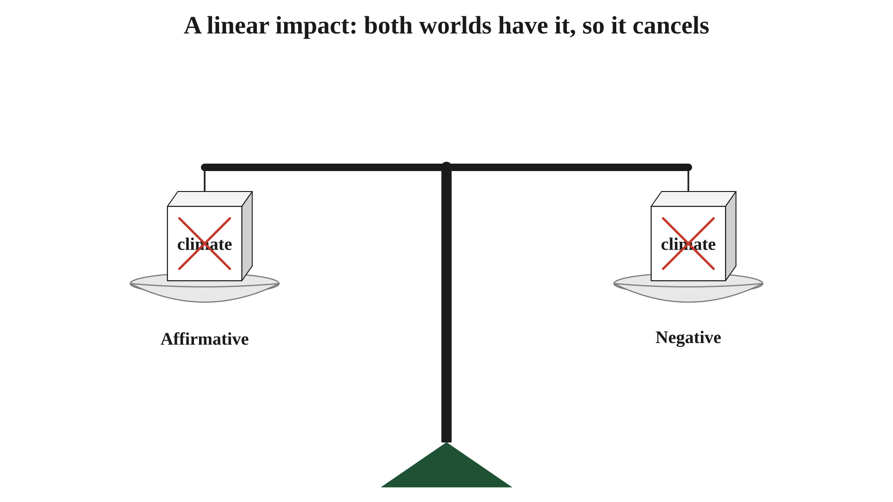

Chapter 14: The Uniqueness Model
In this chapter
- Objectives
- Key terms
- The idea
- 14.1 Why policy debate needs a different structure
- 14.2 Uniqueness: the world before the plan
- 14.3 The link: what the plan does
- 14.4 The internal link: the story of what changes
- 14.5 The impact: getting to the end of the story
- 14.6 Two worlds on the Scale: why uniqueness matters
- Say it
- Worked examples
- A personal decision
- A federal policy
- How a judge weighs it
- Common mistakes
- Practice
- Check questions
Move: Build. Builds on: Chapter 6 (the Contention Model) and Chapter 10 (weighing). Where you use it: every advantage the affirmative reads and every disadvantage the negative reads in a policy debate.
Objectives
By the end of this chapter you should be able to:
- Name and define the four parts of the Uniqueness Model: uniqueness, link, internal link and impact.
- Write uniqueness that points in the right direction for your side.
- Carry an impact through to a terminal consequence: people suffering or people dying.
- Explain why an impact that happens in both worlds cancels out and cannot win a debate.
Key terms
Status quo, advantage, disadvantage, uniqueness, directional uniqueness, predictive uniqueness, link, internal link, impact, terminal impact, linear impact, subordinated notation.
The idea
14.1 Why policy debate needs a different structure
In the fact and value debates you built contentions: a claim, the warrants that support it, and an implication that explains why it matters. That structure works when the question is whether something is true or what matters most. A policy resolution asks a different question: who should do what? The affirmative proposes a change, called the plan, and the judge has to decide whether the world is better with that change or without it.
That means every policy argument is a comparison between two worlds. The first is the status quo, the world as it is now, where nobody adopts the plan. The second is the world of the plan. An argument that only describes one of those worlds is half an argument. The Uniqueness Model is built to describe both worlds and the path from one to the other.
The affirmative's arguments in this structure are called advantages: reasons the world of the plan is better. The negative's are called disadvantages: reasons the world of the plan is worse. Both use the same four parts, in the same order.
The rest of this chapter takes the four parts one at a time. Section 14.5 ends with a table that puts them side by side.
14.2 Uniqueness: the world before the plan
Uniqueness describes the status quo on the specific subject of your position. An advantage about student debt describes student debt as it is today, not the economy in general.
Uniqueness is also directional. You are not just describing the world; you are making a judgment about whether it is going well or badly. The affirmative is arguing for a change, so its uniqueness says things are currently bad. The negative is defending the world without the plan, so its uniqueness says things are currently good, or at least good enough that the plan would make them worse.
Getting the direction wrong is one of the most common mistakes new debaters make. A negative that says "the economy is already collapsing" has just argued that the plan cannot be blamed for collapsing it.
Sometimes uniqueness describes where the world is heading rather than where it is today. This is predictive uniqueness: "Without the plan, tuition will keep rising for the next five years." Predictive uniqueness is still a description of the status quo. It describes the future that happens if nobody acts.
14.3 The link: what the plan does
The link is the simplest part of the model. It states what the plan does, matter of fact, with no judgment attached. If the plan raises the minimum wage to \$20, the link is "The plan passes and raises the minimum wage to \$20." Whether that is good or bad comes later.
For the affirmative, the link is the plan itself. For the negative, the link is the part of the plan that sets the disadvantage in motion. Chapter 18 adds two other kinds of link: a perception link, where someone reacts to the plan (voters, a foreign government, investors), and a spillover link, where the plan leads to similar action elsewhere. Both still start from what the plan does.
14.4 The internal link: the story of what changes
The internal link explains how the link changes the uniqueness. It is the story of what happens after the plan. If uniqueness says people are poor and the link says the plan raises the minimum wage, the internal link says that higher wages give people more money for food and rent.
A useful way to write an internal link is the formula X is key to Y, where X is what the plan does and Y is the impact. "Lower tuition is key to graduating without debt." Each internal link is a claim that needs its own warrant, and that is where the strongest evidence in a position usually goes.
Internal links can take more than one step. A tax cut for small businesses might keep those businesses open, which keeps their employees working, which keeps those families out of poverty. Every step is a place your opponent can attack, so write only the steps you need and support each one.
14.5 The impact: getting to the end of the story
The impact is the consequence of the changes the internal link describes. It is the reason anyone should care.
The rule for impacts is that they must be terminal. A terminal impact follows the chain of consequences all the way to its end, and in policy debate that end is almost always one of two things: people suffer, or people die. "People lose money" is not a terminal impact; it is another internal link. Follow it further. People who lose money skip meals and medical care, lose housing, and live shorter, sicker lives. Now you have an impact.
Impacts can be quantified or qualified. A quantified impact gives a number: "This prevents 10,000 evictions a year." A qualified impact describes a harm that matters even if it is hard to count: "This prevents the dehumanization of people forced to choose between food and shelter." Both count. Quantified impacts are easier for a judge to compare, which matters when you reach weighing.
A warning about terminalizing. Students who learn this rule sometimes stretch every argument to nuclear war. The longer the chain, the less likely each step becomes, and a judge who has read Chapter 10 will ask about probability. Get to suffering or death by the shortest chain your evidence supports.
At a glance
| Part | Question it answers | Advantage (affirmative) | Disadvantage (negative) |
|---|---|---|---|
| Uniqueness | What is the world like now? | Things are bad now. | Things are good now. |
| Link | What does the plan do? | The plan does this. | The plan does this. |
| Internal link | What changes because of it? | That makes things better. | That makes things worse. |
| Impact | Why does that change matter? | Lives are saved and suffering is prevented. | Lives are lost and suffering increases. |
14.6 Two worlds on the Scale: why uniqueness matters
In Chapter 4 you met the Scale: the judge puts each side's impacts on one pan or the other and votes for whichever side outweighs. The origin of that image is a fifth-grade algebra lesson. My teacher, Ms. Fatheringham, taught equations with a balance and white and blue cubes. Whatever you placed on both sides could be removed without changing which side was heavier.
Policy debate works the same way. The judge compares the world of the plan to the status quo, and any impact that happens in both worlds cancels out. That is what the word "uniqueness" means: an impact is unique when it happens in only one world. A good advantage describes an impact that the status quo has and the plan removes. A good disadvantage describes an impact the status quo avoids and the plan causes.
Debaters sum this up as uniqueness controls the direction of the link. Compare two positions about climate change.
| Strong advantage | Weak (linear) disadvantage | |
|---|---|---|
| Uniqueness | Climate change is getting worse now. | Climate change is not a problem now. |
| Link | The plan cuts emissions. | The plan cuts emissions. |
| Internal link | Lower emissions slow warming. | Lower emissions keep warming low. |
| Impact | Fewer deaths from heat, drought and storms. | Climate change stays limited. |
| On the Scale | The status quo has the harm and the plan removes it. The impact belongs to the affirmative. | Both worlds have limited climate change. The impact cancels. |
The second position fails even if every sentence in it is true, because the plan does not change the outcome. An impact that already exists at the same level in both worlds is called linear, and it cannot tip the Scale.

This idea explains a pattern you will see on some topics. If the status quo is clearly bad on the topic's biggest issue, the affirmative can argue that doing something beats doing nothing. Debaters call this try or die. My view is that try or die is mostly a rhetorical move that lets the affirmative skip proving its plan works. In practice, though, judges often vote affirmative on a small risk of solving a large problem unless the negative gives them something on the other side of the Scale. Chapter 18 shows how to provide it.
Say it
Write and deliver positions in subordinated notation: each part of the model is a heading, and each claim under it is numbered, with its support lettered beneath. Your judge flows in the same structure, so speaking in it makes their job easy. The frames below work for any advantage:
- "Our first advantage is ___."
- "Uniqueness: right now, ___ is a problem."
- "The link is the plan: the plan ___."
- "Once the plan passes, ___ changes, and that leads to ___."
- "That means ___. That is our impact, and it only happens if you vote affirmative."
A disadvantage uses the same frames with the direction reversed: "right now, ___ is going well," "that change causes ___," and "that is the impact, and it happens only in the world of the plan."
Here is what a short advantage sounds like on the resolution Sam should get a dog. The example is hypothetical; in a real debate, each lettered point would carry evidence.
"Our first advantage is home security. Uniqueness. One: there have been break-ins in Sam's neighborhood. A: three homes on Sam's street were burglarized this year. The link. One: the plan passes and Sam adopts a dog. The internal link. One: dogs deter burglars. A: burglars choose homes without dogs, and a dog wakes the household if someone does break in. The impact. One: Sam's family and home stay safe. That only happens if you vote affirmative."
Notice what the speaker does: names each part before giving it, numbers each claim and letters each piece of support. A judge can flow that without guessing where anything goes.
Worked examples
A personal decision
Resolution: A high school graduate should start at a community college instead of a university.
Imagine a graduate, Maya, who has been admitted to her state university and plans to borrow to pay for it. The affirmative writes an advantage about debt.
| Part | Affirmative advantage: student debt |
|---|---|
| Uniqueness | Maya is about to start at a public university that costs much more per year than a community college. For 2025-26, average published tuition and fees are \$11,950 at public four-year colleges for in-state students and \$4,150 at public two-year colleges (College Board, 2025). |
| Link | The plan: Maya starts at a community college. |
| Internal link | Lower tuition for her first two years is key to borrowing less. Every year at the community college saves her the difference in tuition. |
| Impact | Less debt means smaller monthly payments after she graduates, more money for rent, food and medical care, and less financial stress in her early career. |
The negative answers with a disadvantage about finishing the degree, built from the same four parts with the direction reversed.
| Part | Negative disadvantage: transfer risk |
|---|---|
| Uniqueness | Maya is on track for a bachelor's degree: she is admitted, enrolled and has a four-year plan. |
| Link | The plan: Maya starts at a community college instead. |
| Internal link | Transferring adds steps where students lose credits or stop out. The negative needs evidence for this claim, such as research on transfer students' completion rates. |
| Impact | A delayed or unfinished degree means lower lifetime earnings and the same financial stress the affirmative claims to prevent. |
Look at the two impacts. Both are about Maya's financial security, so the debate will come down to which world gives her more of it. That is the Scale at work.
A federal policy
Resolution: The United States federal government should establish a universal basic income.
| Part | Affirmative advantage: poverty |
|---|---|
| Uniqueness | Poverty remains widespread in the United States. The official poverty rate was 10.6% in 2024, which is 35.9 million people (U.S. Census Bureau, 2025). |
| Link | The plan: the federal government pays every adult \$1,000 a month. |
| Internal link | A guaranteed income is key to covering basic needs, so fewer people have to choose between food and housing. This step needs evidence, such as studies of guaranteed income programs. |
| Impact | Poverty causes poor health and shorter lives. Reducing it means fewer people suffer and fewer die early. |
The uniqueness evidence here does real work. A judge who hears that 35.9 million people are in poverty understands what the status quo looks like before the affirmative has proposed anything.
How a judge weighs it
When a position reaches the end of the debate, a judge asks three questions about it. Does each part still stand, or did the other side take one out? Does the impact belong to only one world? And is it bigger, more likely, faster or harder to reverse than what is on the other side of the Scale?
The model also tells you where a position can break. Answer the uniqueness and the impact may already be happening without the plan. Answer the link and the plan does not cause it. Answer the internal link and the story falls apart in the middle. Answer the impact and it may not matter. Chapter 19 builds a full set of answers around those four points.
If you are judging, put an impact on the Scale only if the debater explained it, and remove it if the other side won an answer to any of its parts. A position missing a part is incomplete; a disadvantage with no uniqueness, for example, has not shown that the plan changes anything.
Common mistakes
- Uniqueness pointing the wrong way. A negative that says things are already bad has conceded the plan is not to blame. Check the direction before you write anything else.
- Stopping at an internal link. "The economy gets worse" is not an impact. Ask "and then what happens to people?" until you reach suffering or death.
- Judging the plan in the link. "The plan passes and wrecks the economy" puts the internal link and impact into the link. Keep the link a plain description.
- Skipping steps in the story. If the internal link jumps from the plan straight to a huge impact, your opponent will ask how, and you will have nothing to point to.
- Reading a linear impact. If the impact happens at the same level without the plan, it cancels. Make sure your position changes the outcome.
Practice
Drill: fix the broken position (15 minutes, pairs). Each partner writes an advantage on any resolution from Appendix C with one deliberate flaw: wrong-direction uniqueness, a non-terminal impact, a judgment in the link, or a missing internal link. Swap papers. Find the flaw, name the part it is in, and rewrite that part. Then explain your fix to your partner in under a minute.
Writing exercise. Choose a resolution from the example ladder and write one complete advantage in subordinated notation, 200 to 300 words. Label each part and mark every claim that would need evidence in a real debate.
Check questions
Choose an answer to see feedback. Nothing is recorded.
1. Which part of the Uniqueness Model describes the status quo?
2. A negative disadvantage's uniqueness should say that, right now, things are:
3. Which of these is a terminal impact?
4. An impact that happens at the same level with or without the plan is:
5. "The plan passes and raises the minimum wage to \$20" is an example of: